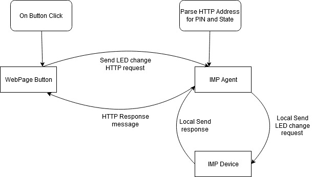
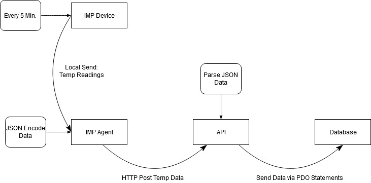

One of the biggest advantages of using Bootstrap over standard html is the responsivness of the framework. For example, when making use of components of bootstrap you do not have to worry about switching devices or screen sizes and seeing your webpage completely broken.
Another great aspect of using Bootstrap over HTML is how much time it saves. When using bootstrap you come across many different classes that are already formatted for you and need little to no CSS in order to look nice and professional.
Bootstrap also has great compatabilty with HTML and CSS. What I mean by this is that if you are already familiar with how to use HTML and CSS then you will be able to use Bootstrap very easily and you can pick and choose certain pieces of bootstrap to use alongside your CSS and HTML code.
getConnstring();
// function to get all the genre cards info *******Use code from loadblock1.php
function getCards()
{
global $conn;
//fetch data from table in db
$sqlGenreDetails = "SELECT g.gId, Genre as genreTitle, SUBSTRING(artDesc,1,100) AS artDescPreview, artPath, imgName, imgPath
FROM `Music Genres` AS g
JOIN `Music GenreArticles` AS gA on gA.gId = g.gId
JOIN `Music GenreImages` AS gI on gI.gId = g.gId
JOIN `Music Articles` AS art on art.artId = gA.artId
JOIN `Music Images` AS img on img.imgId = gI.imgId";
//send select query to db
$result = mysqli_query($conn, $sqlGenreDetails);
//checks if there is any data in the table
if(mysqli_num_rows($result) > 0){
// convert to JSON
$rows = array();
while($r = mysqli_fetch_assoc($result)) {
$rows[] = $r;
}
return json_encode($rows);
}
else{
echo "Error No Results Found in Server";
}
}
// function to get the articles related to the genre *******Use code from loadblock1_articles.php
function getArticles()
{
global $conn;
//fetch data from table in db
$sqlGenreDetails = "SELECT g.gId, Genre as genreTitle, artDesc, artPath, imgName, imgPath
FROM `Music Genres` AS g
JOIN `Music GenreArticles` AS gA on gA.gId = g.gId
JOIN `Music GenreImages` AS gI on gI.gId = g.gId
JOIN `Music Articles` AS art on art.artId = gA.artId
JOIN `Music Images` AS img on img.imgId = gI.imgId
WHERE '" . $_SESSION['articlePath'] . "' = artPath";
//send select query to db
$result = mysqli_query($conn, $sqlGenreDetails);
//checks if there is any data in the table
if(mysqli_num_rows($result) > 0){
// convert to JSON
$rows_art = array();
while($r = mysqli_fetch_assoc($result)) {
$rows_art[] = $r;
}
return json_encode(utf8ize($rows_art));
}
else{
echo "Error No Results Found in Server";
}
}
//****** This is code from: https://www.thetopsites.net/article/52641198.shtml
/* Use it for json_encode some corrupt UTF-8 chars
* useful for = malformed utf-8 characters possibly incorrectly encoded by json_encode
*/
function utf8ize( $mixed ) {
if (is_array($mixed)) {
foreach ($mixed as $key => $value) {
$mixed[$key] = utf8ize($value);
}
} elseif (is_string($mixed)) {
return mb_convert_encoding($mixed, "UTF-8", "UTF-8");
}
return $mixed;
}
?>
It is important to keep in mind that once the data is captured from the DB it is then encoded via JSON and then decoded in view/loadblock.php or view/loadblock_articles.PHP where the data is taken and placed into some html.
One of the biggest advantages of using Bootstrap over standard html is the responsivness of the framework. For example, when making use of components of bootstrap you do not have to worry about switching devices or screen sizes and seeing your webpage completely broken.
When a user wants to post a question, answer, or edit one of their posts the data is entered into a form and then sent via a POST operation to a controller which takes that data, modifies it to ensure security, and then calls a method located in the API to create the corresponding query to the requested operation. Specifically for the user to update one of their posts the user will have to first click on a button which will bring up a menu with a form in it. This form has a textare which has the text loaded into it that the user wants to edit. This is done by creating a hidden input field which holds the answer information and is extracted into a Jquery variable and then placed into the textarea. After that the user types in the updated message and that goes through the process listed above: POSTed, processed, and queried. The user is then brought back to the blog to see their updated post.
The secuity measures that I have implemented into my code go through a multi-stage process. Firs it begins in the controller where the inputs are sanatized using PHP's filter_var(..,FILTER_SANITIZE_STRING) and mysqil_real_escape_string() both of these used in conjection will ensure that SQL injection possibilities are lessened. But in the off case that that stage somehow fails then there is another stage within the API that takes recieved json data from the controller and places it into PDO sql statements. All of these methods used together are used for any part of the site where the user is allowed to enter text.
Once the login button is pushed a login bootstrap modal is displayed. In this model the user is provided with the option to either login or signup. each of these options lead the user to a form where the entered data is POSTed to a controller. In this controller the data is sanatized and then json encoded to then be sent to the API functions which make the queries. For the sign up query the Email is first checked to make sure that it doesnt already exist within the database. If it doesn't then it will create a new Account and send the user to the home screen where they will then be able to login with their new account. When the user logs in the API checks to see that the email exists within the database and password_verifys the password. Once that is done a SESSION is now created where the userId and Nicname is stored. These are used to verify that the user's corresponging questions and answers are able to editable. If the question/answer is editable then a button appears where they can edit said post. Once the user logs out their sessions are unset. Once the SESSIONS are unset a check is made to see if they are unset and revokes the ability to post a question or answer.
IMP LED Data Flow
Temperature Data Flow
One of the first key advantages of using JSON to pass and store data that comes to mind is the ability for the data to be easily accessible to other languages. Since most languages are able to make use of the JSON libraries then that means data between languages and applications are able to be sent to each other. Another key advantage of JSON is that the abiltiy to parse data is extremely easy and fast. The syntax is small and lightweight which makes the execution times much faster. Along the same lines as the last point, JSON is very readable. Because of JSON's simplicty of use, this adds predicitaility and increases readability.
With a large system like the HIVE there should be a great deal of effort put into the security aspects of the system. With this in mind we can begin by assuming which components of the system need to be secure. We can start with that each device owned by a user will need to be represented as it's own product, which means that each devcie will have its own unique identifier because if otherwise there will be issues with devices in the database overlapping data. For this to happen each device a user owns will need to generate a unique identifier upon connection to the database. Once this identifier is created then the device will be officially registered but to ensure that it is registered to the correct user there will most likely be an application or website where the user connects to the same network that the device is on and the device will then show up for the user to link their account to that device. When this happens the database will most likely create an associative relation between the user's account id and the unique id of the device. Once this device is linked to the user then it will be linked to to the other device on the network which then allow them to communicate amongst each other. In order to ensure the security of these devices, access to them would be locked in the app unless the verified user is logged in.
In order to create a dynamic RSS feed from the database I had to begin by making a call to the database in order to get the relevant data. I did this by reusing the API from block 1. Once I had the data I decided that in order to make the RSS feed dynamic then the XML file used for the RSS would have to written every time the request to view it is made. Using PHP and SimpleXML I was able to take the data from the database and place it in variables to be used in the XML tags. I also had to make sure the XML file was able to be formatted as an RSS feed, which was also done dynamically with PHP. Every time the file is created in PHP, I made sure the format conforms to the W3 specifications of an RSS FEed.
The way I used XSLT to generate the weather forecast is quite simple. First in my PHP script make a SimpleXMLload from the weather forecast website. In this case I am using YR.no and in order to get the exact information I want from the website; the location and temperature. I had to look at the source XML file to see how it is structured. This is vital since XSLT relies on direct tag calls in order pull the relevant information from the source. After locating all the necessary tags then in the same PHP file that requests the XML weather forecast, I create an XSLT processor object which sends the XML file to essentially parse all the relevant information for me and restyle it for how it should be displayed on my website.
I create a simple service that contains a library of all the relevant functions and a file that handles the requests made to the service. On my main website I have 2 buttons that, when clicked, either send the user to page that has requested 6 of the most recent questions or 1 question from a user id specified in the file. When a request is made via a curl, it is handled in the web service by responding with the relevant json data. The json data is then sent back to the requesting php file and decoded to be displayed.